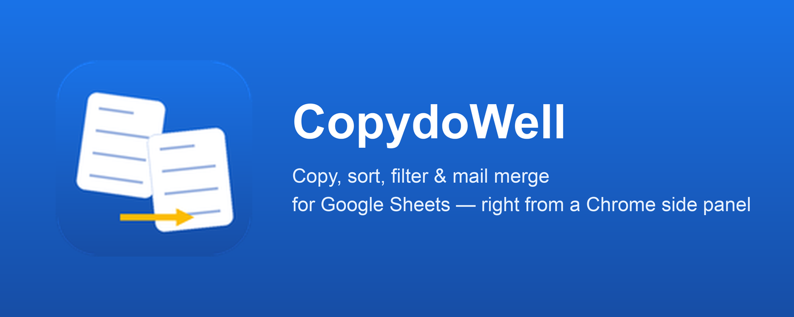
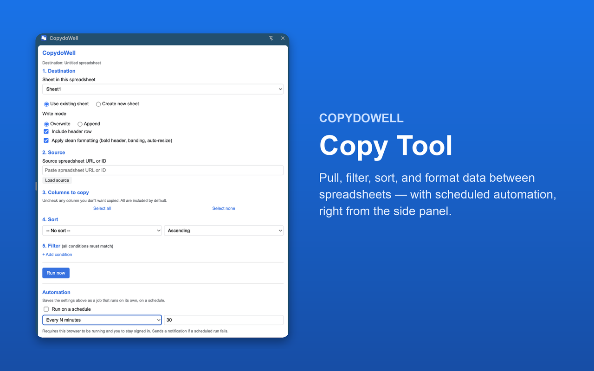

On this page
What it does
CopydoWell moves data between spreadsheets without formulas, IMPORTRANGE, or manual copy-paste. It's available in two forms that share the same core idea — pull, sort, filter, and sync — but work a little differently:
- A Google Sheets add-on, installed from the Google Workspace Marketplace, opened from the Sheets Extensions menu.
- A Chrome extension, installed from the Chrome Web Store, opened as a side panel next to any Google Sheet.
See it in action

Which one should I use?
Both do the same core job. A few differences worth knowing:
- The Chrome extension is free, and supports multiple named scheduled triggers you can list, edit, and delete — each with its own source, destination, and schedule.
- The Sheets add-on is free and additionally supports edit-triggered and form-submit-triggered automation (in addition to scheduling), which the extension cannot do.
Google Sheets add-on
Install
Installed from the Google Workspace Marketplace directly into Google Sheets. Once installed, open its tools from the Extensions menu in any Google Sheet:
- Extensions → CopydoWell → Copy Tool — copy, sort, filter, and automation
Copy Tool
The sidebar walks through four steps, plus optional automation.
1. Destination
Pick a sheet in the spreadsheet you currently have open — this is where the data will land. Use an existing sheet or create a new one. Choose Overwrite to replace its contents each time, or Append to add rows below what's already there. "Include header row" controls whether column headers are copied along with the data, and "Apply clean formatting" bolds the header, freezes it, auto-resizes columns, and applies row banding.
2. Source
Paste the URL (or ID) of the spreadsheet you want to pull data from, then click Load source. Once connected, pick which sheet within that spreadsheet to read.
3. Sort
Optionally choose a column from the source sheet to sort by, ascending or descending.
4. Filter
Add one or more conditions (column, operator, value) — for example "Status equals Active." All conditions must match for a row to be included (AND logic). Available operators: equals, not equals, contains, does not contain, greater than, less than, greater or equal, less or equal, is empty, is not empty.
Click Run now to perform the copy immediately.
Automation
Below Run now, three toggles let a saved job run on its own:
- Run automatically when the source sheet is edited — re-runs the job whenever the source sheet changes.
- Run automatically when the linked form is submitted — re-runs the job whenever the source spreadsheet's linked Google Form receives a new response.
- Run on a schedule — every N minutes, every N hours, or daily at a chosen hour.
Turning on any toggle saves your current Destination/Source/Sort/Filter settings as "the job" and creates the matching trigger. Turn a toggle off at any time to remove that automation.
Chrome extension
Install
Installed from the Chrome Web Store. Once installed, open the side panel on any Google Sheet (click the CopydoWell toolbar icon). The panel has two tabs: Copy Tool and Triggers.
Copy Tool
Works like the add-on's Copy Tool, with one addition: after picking which columns to copy, you can use the ↑ / ↓ buttons next to each selected column to set the destination's column order — it doesn't have to match the source sheet's order.
Triggers
The extension supports multiple, independent scheduled jobs at once, each with its own source, destination, and schedule:
- From the Copy Tool tab's Automation section, name a trigger, set a schedule (every N minutes/hours, or daily at an hour), and click Add trigger.
- Only run if the source changed — an optional switch so a scheduled job skips itself when the source sheet hasn't changed since its last run, avoiding redundant copies.
- Switch to the Triggers tab to see every trigger you've saved — its name, schedule, source, destination, next run time, and a run history: the last run's status (success, skipped, or failed), when it ran, and how many rows it copied.
- Each trigger card has Edit (reloads its exact settings into the Copy Tool tab so you can adjust and save changes) and Delete (removes it and cancels its schedule) buttons.
Unlike the add-on, the extension can't react to edits or form submissions directly (a browser extension has no way to be notified the instant a Sheet changes) — only scheduled runs are supported. A trigger only runs while Chrome is open and you remain signed in; if a run fails, you'll get a Chrome notification.
Pricing
The Chrome extension is free — every feature, including scheduled automation, with no purchase required. If it saves you time, donations are welcome and help keep the project running: support CopydoWell. See the Terms of Service for details.
Support
Questions or issues, for either product: support@metalix.in